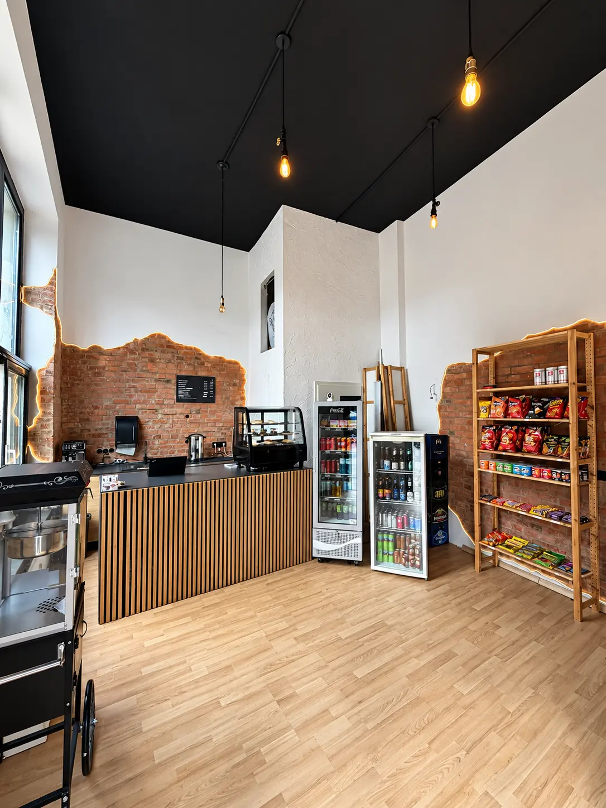
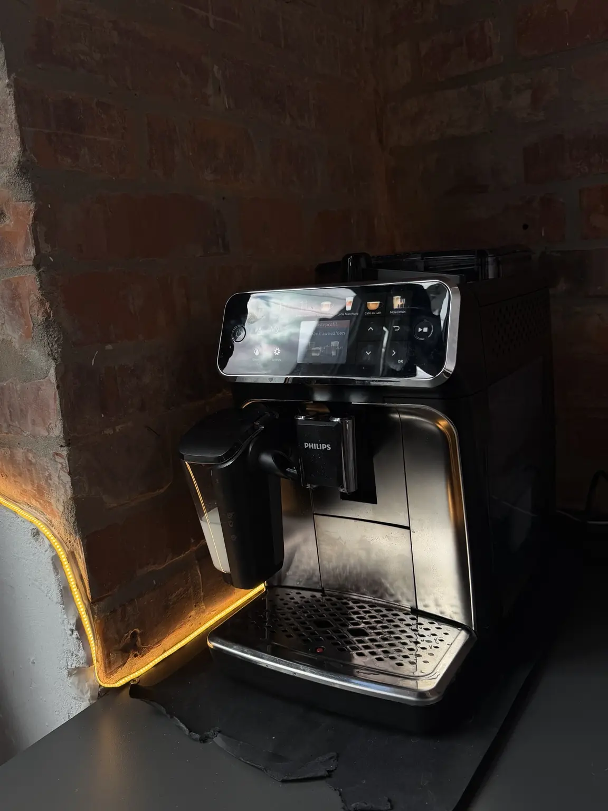
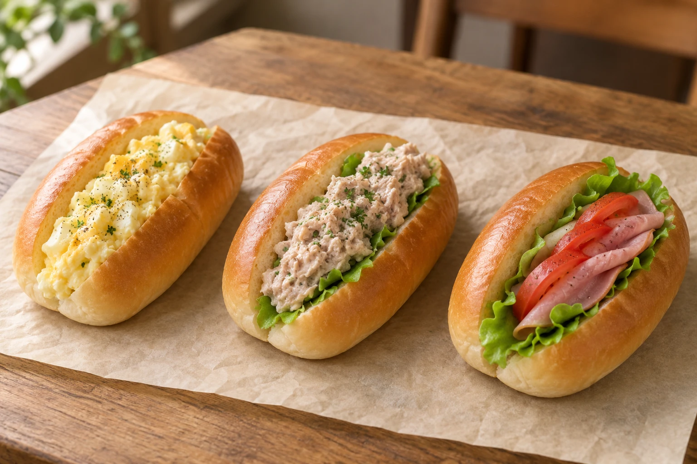
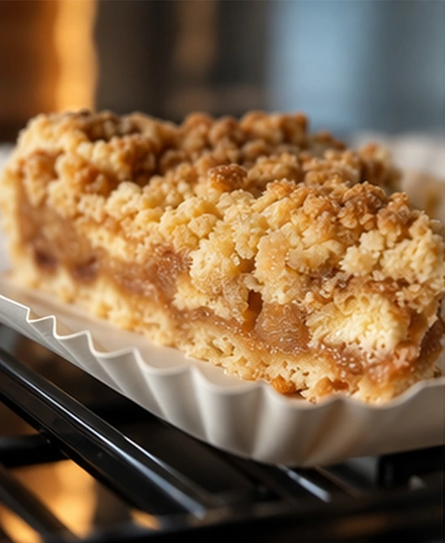
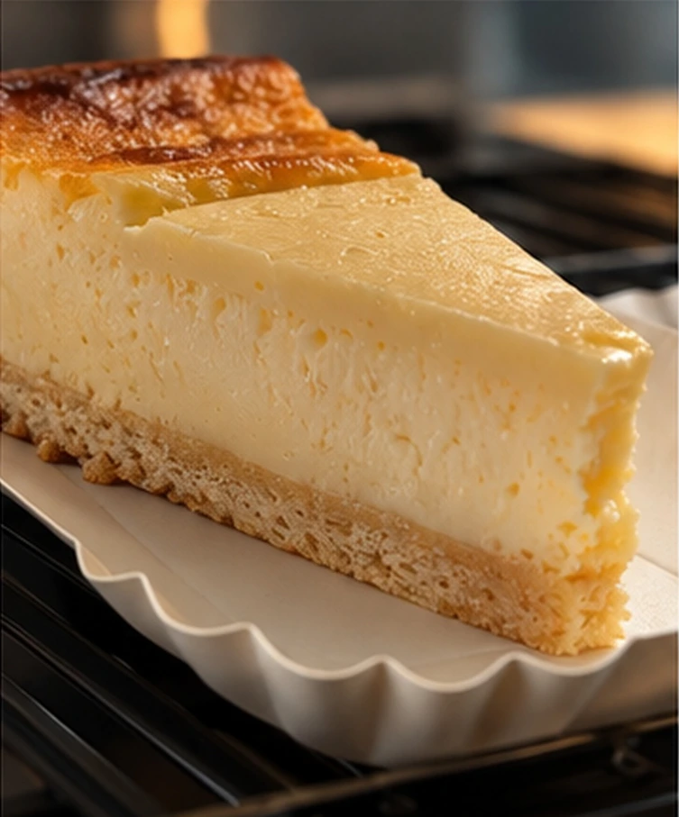
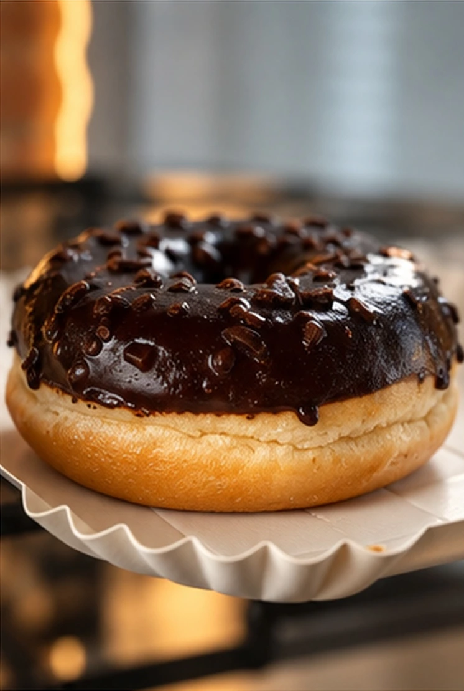
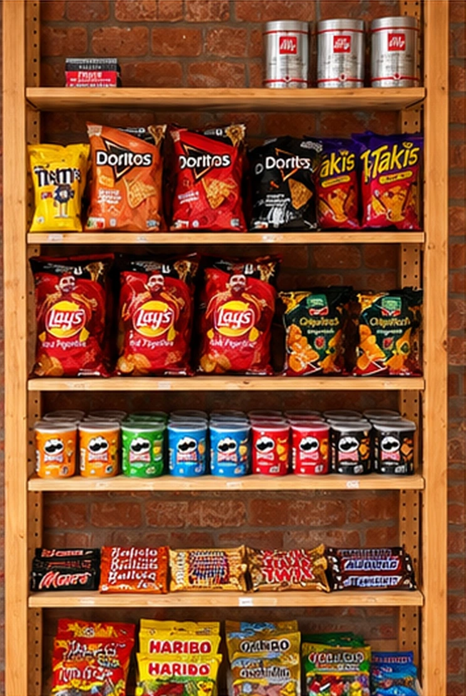
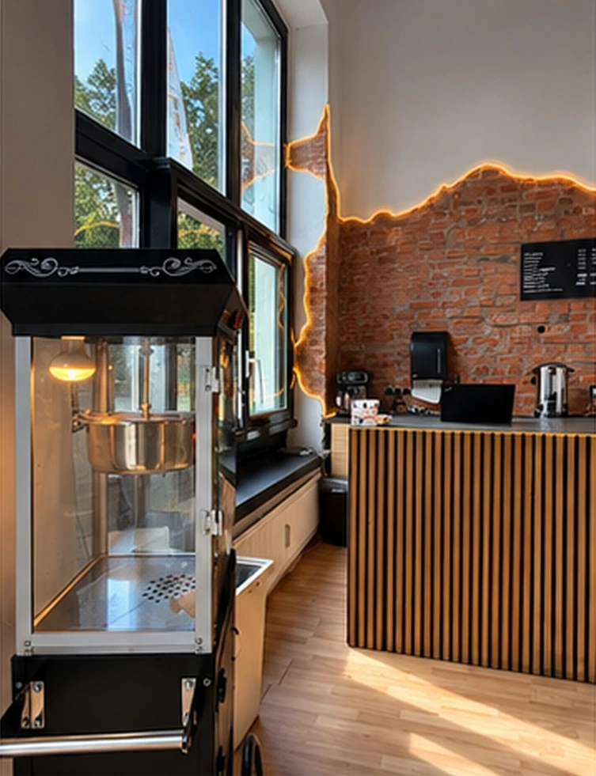
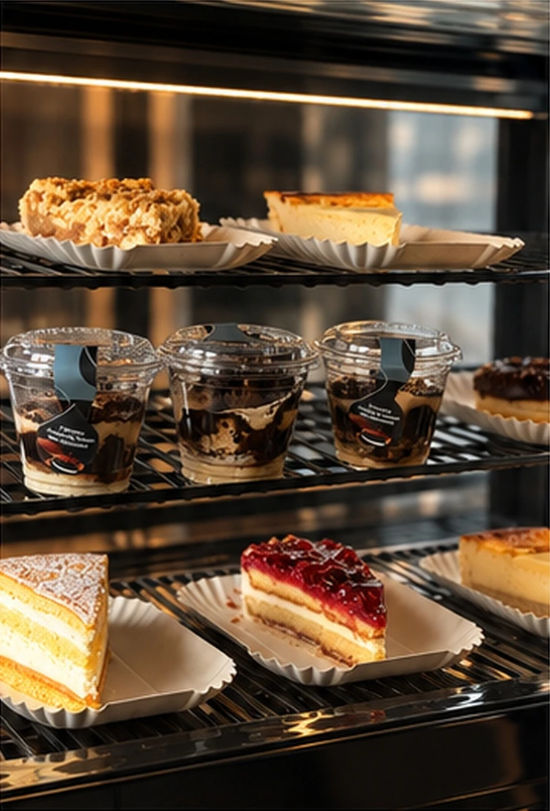
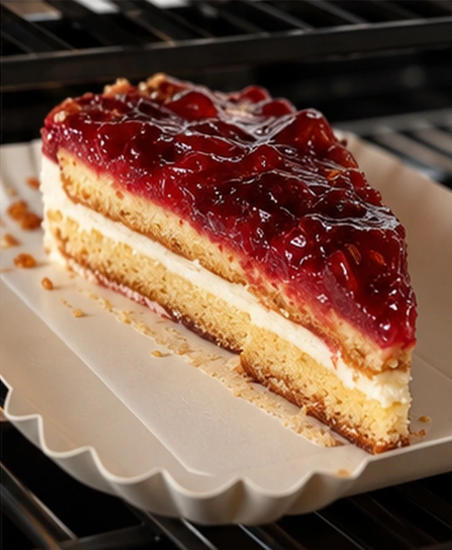

KAFFEE · SNACKS · KUCHEN · HANNOVER
Klee
Corner.
Guter Kaffee.
Eine kleine Pause.
Dein Kleefeld.
Kaffee, frisch belegte Brötchen, Kuchen und Snacks mitten in Hannover-Kleefeld.
Klee Straße 1 · 30625 Hannover

Geöffnet
VOM ERSTEN SCHLUCK AN
Dein Kaffee.
Jederzeit.
Verschiedene Kaffeespezialitäten – frisch zubereitet und schnell mitgenommen.
Deinen Kaffee entdeckenDEINE HERZHAFTE PAUSE
Frisch belegt.
Für unterwegs
oder die kleine Pause.

NOCH EIN KLEINES STÜCK GLÜCK
Etwas Süßes
zum Kaffee.
Apfelkuchen, Kuchen & Süßes.
Entdecke die Auswahl an unserer Theke.



SÜSS. SALZIG. ERFRISCHEND.
Für
zwischendurch.
Popcorn, Snacks und Süßigkeiten. Dazu Wasser, Softdrinks, Säfte, Energy Drinks oder alkoholfreies Bier mit 0,0 % Alkohol.
Zum Angebot
EIN KLEINES STÜCK KLEEFELD
Dein Viertel.
Deine Pause.
Dein Corner.

Klee Corner ist ein moderner und gemütlicher Ort in Hannover-Kleefeld für Kaffee, Snacks und etwas Süßes. Schnell vorbeikommen, etwas mitnehmen oder kurz bleiben.
EIN BLICK INS CAFÉ
So sieht deine
Pause aus.
Echte Einblicke.
Mitten aus Kleefeld.


WIR SEHEN UNS IN KLEEFELD
Ganz nah.
Ganz einfach.
Mitten in Hannover-Kleefeld
Klee CornerKlee Straße 1
30625 Hannover
Geöffnet
Route planenKLEE STRASSE 1 · HANNOVER
Dein Weg
zu uns.
Mit einem Klick wird Google Maps geladen. Dabei wird eine Verbindung zu Google hergestellt.
Route direkt öffnen